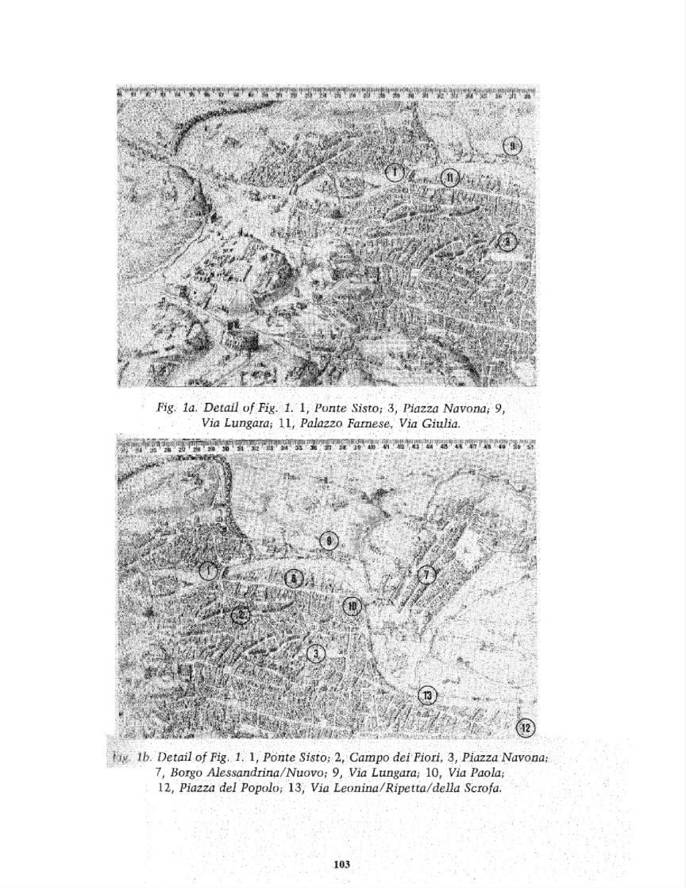

Fig. la. Detail of Fig. 1. 1, Ponte Sisto; 3, Piazza Navona; 9, Via Lungara; 11, Palazzo Farnese, Via Giulia. lb. Detail of Fig. 1. 1, Ponte Sisto; 2, Campo dei Fiori, 3, Piazza Navona; 7, Bargo Alessandrina/Nuovo; 9, Via Lungara; 10, Via Paola; 12, Piazza del Popolo; 13, Via Leonina/Ripettaldella Scrofa. 103
